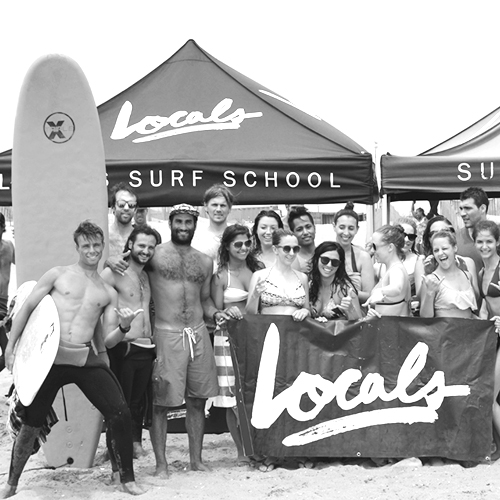
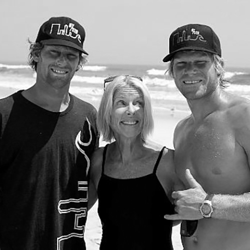
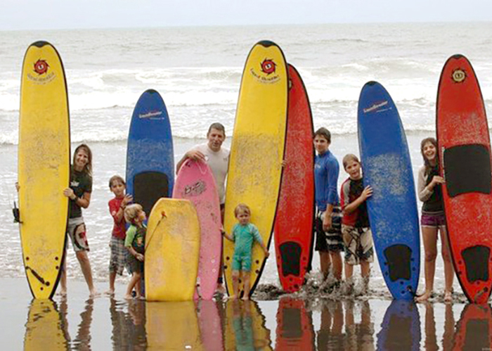

There are a few good places to surf, some of which you can get to by subway or commuter train. Check out the map below for the surfing beaches closest to the city.
Beaches
PLAY MUSIC?

1. BEACH 92ND STREET, ROCKAWAY
Rockaway's main surfing beach is blocks from the A train and perhaps New York's most crowded breaks. It's also one of the more dangerous and challenging waves... steep, fast, and often unpredictable.

2. BEACH 67TH STREET, ROCKAWAY
Rock’s other surf beach is less crowded, making it a better spot for learning. Novice surfers should stay aware of the wooden pilings protruding from the shoreline before catching a wave.

3. LINCOLN BOULEVARD, LONG BEACH
Mellow and predictable, the break is excellent for beginners (and located just a few blocks from the LIRR station and Unsound surf shop, where you can rent a board).

4. NATIONAL BOULEVARD, LONG BEACH
The consistent, user-friendly wave was one of the best-kept secrets of the Long Beach surf scene for years.
Beach conditions
Before you head out to a beach for surfing, check the surf report to find out wave height, swell direction, tide schedule, and wind speeds. Here is an excellent guide to understanding how to read surf reports:
Look up current beach conditions here:
The World Surf League has lots of great surf videos on their Instagram feed: @wsl
Surf Lessons
If you are new to surfing, consider taking a couple of lessons before setting out to catch your own waves. There are several surfing schools throughout New York and Long Island, some of which teach lessons year-round. The schools provide you with a wetsuit, surfboard and leash, plus many good tips to help you get the hang of it.
Check out these surf schools when you're ready for a lesson:

LOCALS SURF SCHOOL
Locals Surf School was founded in 2011 by Mike Reinhardt and Mike Kololyan, two life-long surfer/skaters and locals of Rockaway Beach, NYC. They offer private and group surf and skate lessons, camps for kids, charity programs and contests.

SKUDIN SURF SCHOOL
A family-run surf school that offers group and private surf lessons for kids and adults, plus summer camps and contests. Lessons offered in Long Beach, Rockaway and Rincon, Puerto Rico.

NEW YORK SURF SCHOOL
Based at Beach 69th Street in Rockaway, certified instructor Frank Cullen and his crew offer group and private lessons to kids and adults, plus summer camps.
 ME
ME